3.7.9 Reading Inductor Labels
If you are lucky, the inductance value and tolerance will be printed on your inductor in an easy-to-read format (e.g., 82μH ± 10%). However, many molded and dipped inductors come with a band color code. For smaller surface-mount inductors, a special shorthand printed code provides the inductance value and tolerance—see Fig. 3.90.
FIGURE 3.90
3.7.10 Inductor Applications
FIGURE 3.91 Filters offer little opposition to certain frequencies while blocking others. In (a), a low-pass filter is constructed using a resistor and inductor. The inductor’s impedance increases with frequency, thus preventing high-frequency signals from passing. In (b), a high-pass filter blocks low frequencies—the inductor acts as a low-impedance path to ground for low-impedance signals. (c) shows a bandpass filter, allowing only a very narrow band of frequencies through. See Chap. 2 for the theory. (d) shows a low-pass filter used with a speaker. (e) shows a differential-mode high-pass filter for 75-Ω co-ax. It rejects high-frequency signals picked up by a TV antenna or that leak into a cable TV system. It is ineffective against common-mode signals, however. (f) shows an ac-line filter used to filter RF energy from power lines.
FIGURE 3.92 In switching regulator applications, an inductor is used as an energy storage device, when the semiconductor switch is on, the current in the inductor ramps up and energy is stored. When the switch is turned off, the stored energy is released into the load. Output voltages have a ripple that must be minimized by selecting appropriate inductance and output capacitor values. Figure 3.92a, b, and c shows various switching regulator configurations: buck (lower output voltage), boost (higher output voltage), and buck-boost (opposite polarity). Note that in the boost converter, the boost inductor current does not continuously flow to the load. During the switch “on” period, the inductor current flows to ground and the load current is supplied from the output capacitor.
FIGURE 3.93 (a) An amplifier with positive feedback can be made to produce an output even in the absence of any input. Such circuits are called oscillators. In (a), an operational amplifier uses an LC resonant filter that eliminates from the amplifier input any frequencies significantly different from the LC resonant filter’s resonant frequency: 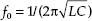. The amplifier is alternately driven to saturation in the positive and negative direction, so it produces a squarewave at V2. This squarewave has a Fourier component that is fed back to the noninverting input through resistor R in order to keep the oscillation from damping out. A sine wave is generated at V1.
(b) There are two basic types of LC oscillators, Colpits and Hartley. The Colpits uses two capacitors, as shown here. It is generally favored over the Hartley, shown in (c), because of the simplicity of requiring only one inductor, which is usually more expensive and difficult to obtain than capacitors C1 and C2. The frequency of the Colpits oscillator is given by the formula in (b). See Chap. 10 on oscillators for more details.
FIGURE 3.94
Here are a few simple radiofrequency circuits that make use of LC resonant filters to tune the circuits.
(a) The simplest radio receiver consists of nothing more than an antenna, a diode (germanium), and a pair of headphones. Such a receiver has no frequency selectivity, however, and will receive several of the strongest AM broadcast stations simultaneously. By adding a variable inductor that forms a resonant LC circuit with the antenna capacitance, a usable radio receiver can be constructed that is capable of tuning in to a number of different stations. (The variable capacitor provides additional tunability.) The encoded audio signal within the AM carrier is demodulated by the diode (the diode generates low-frequency [audio] Fourier components that are absent in the transmitted wave). After passing through the diode, only the positive half of the wave remains. This wave contains low-frequency components in addition to components at the frequency of the carrier wave. With the addition of a low-pass filter, only the low-frequency components remain. The frequency response of headphones and of a human ear will effectively act as a low-pass filter. The demodulated signal can be input into an amplifier to drive a speaker—see amplifier circuit. Real radio AM receivers are much more sophisticated than this, using a superheterodyne design scheme.
(b) A radio transmitter consists of an RF oscillator, one or more amplifier stages, and a modulator. In the simple FM transmitter shown here, the LC resonant filter sets the amplifier oscillatory frequency—the variable capacitor allows for adjustability. Audio signals that enter will be frequency-modulated into the carrier and radiated as radio waves. An FM radio receiver should be able to pick up the circuit signal. A homemade inductor can be made by tightly winding 10 turns of 22-gauge wire around a ¼-in form.
3.7.11 EMI/EMC Design Tips
The following are some tips to avoid EMI and EMC problems. Tips include proper design techniques for PCB layout, proper power supply considerations, and effective use of filtering components. (Referenced letters that follow refer to Fig. 3.95.)
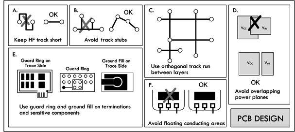
FIGURE 3.95
PCB Design Tips
Avoid slit apertures in PCB layout, such as a ground plane that is divided into two parts. Regions of high impedance are sources of high EMI, so use wide tracks for power lines on the trace sides for increased conduction. Make signal tracks stripline (ground planes above and below) and include ground plane and power plane whenever possible. Keep HF and RF tracks short and lay out the HF tracks first—see (a). In Fig. 3.95. Avoid track stubs, since they cause reflections and harmonics—see (b). Use a surrounding guard ring and ground fill where possible on sensitive components and terminations. A guard ring around trace layers reduces emission out of board. Likewise, connect to ground only at a single point—see (e). Keep separate power planes over a common ground to reduce system noise and power coupling—see (d). Keep track runs as orthogonal as possible between adjacent layers—see (c). Also avoid loop track that acts as a receiving or radiating antenna. Avoid floating conductor areas, since they act as EMI radiators. Connect them to a ground plane otherwise.
Power Supply
Avoid loops in supply lines, as shown in (h). Also decouple supply lines at local boundaries—see (i). Position high-speed circuits closest to the power supply, while placing the slowest section farthest away to reduce power plane transients—see (g). When possible, isolate individual systems on both power supply and signal lines—see (j).
Filtering Components
Position biasing and pull-up/down components close to driver/bias points. Make use of common-mode chokes between current-carrying and signal lines to increase coupling and eliminate stray fields—see (k). Place decoupling capacitors close to chip supply lines to reduce component noise and power line transients—see (l).
These tips were adapted from an Engineering Note, “Electro-Magnetic Interference and Electro-Magnetic Compatibility (EMI/EMC)” written by David B. Fancher, Inductive Products Division, Vishay Dale.
3.8 Transformers
3.8.1 Basic Operations
A basic transformer is a two-port (four-terminal) device capable of transforming an ac input voltage into a higher or lower ac output voltage. Transformers are not designed to raise or lower dc voltages, however, since the conversion mechanism relies on a changing magnetic field generated by a changing current. A typical transformer consists of two or more insulated wire coils that share a common laminated iron core. One of the coils is called the primary (containing NP turns), while the other coil is called the secondary (containing NS turns). A simplistic representation of a transformer is shown in Fig. 3.96, along with its schematic symbol.
FIGURE 3.96
When an ac voltage is applied across the primary coil of the transformer, an alternating magnetic flux ΦM = ∫(VIN/Np)dt emanates from the primary, propagates through the iron-laminated core, and passes through the secondary coil. (The iron core increases the inductance, and the laminations decrease power-consuming eddy currents.) According to Faraday’s law of induction, the changing magnetic flux induces a voltage of VS = NSdΦM/dt, assuming there is perfect magnetic flux coupling (coefficient of coupling k = 1). Combining the primary flux equation with the secondary induced voltage equation results in the following useful expression:
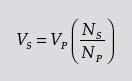
(3.1) Transformer voltage ratio
This equation says that if the number of turns in the primary coil is larger than the number of turns in the secondary coil, the secondary voltage will be smaller than the primary voltage. Conversely, if the number of turns in the primary coil is less than the number of turns in the secondary, the secondary voltage will be larger than the primary.
When a source voltage is applied across a transformer’s primary terminals while the secondary terminals are open-circuited (see Fig. 3.97), the source treats the transformer as if it were a simple inductor with an impedance of ZP = jωLP = ωL ∠ 90°, where LP represents the inductance of the primary coil. This means that the primary current will lag the voltage (source voltage) by 90°, and the primary current will be equal to VP/ZP, according to Ohm’s law. At the same time, a voltage of (NS/NP) VP will be present across the secondary and will be in phase with the primary voltage or 180° out of phase, depending on the secondary coil winding direction or depending on which secondary coil end you choose as a reference (more on this in a moment).
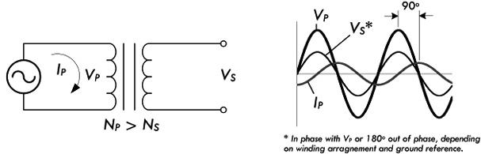
FIGURE 3.97
When there is no load attached to the secondary of a transformer, the current within the primary is called the magnetizing current of the transformer. An ideal transformer, with no internal losses, would consume no power, since the current through the primary inductor would be 90° out of phase with the voltage (in P = IV, I is imaginary and the “power” is imaginary or reactive). With no load in the secondary, the only losses in the transformer are associated with those losses in the iron core and losses within the primary coil wire itself.
Example 1: A transformer has a primary of 200 turns and a secondary of 1200 turns. If a 120 VAC is applied to the primary, what voltage appears across the secondary?
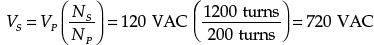
This is an example of a step-up transformer, since the secondary voltage is higher than the primary voltage.
Example 2: Using the same transformer from Example 1, flip it around so the secondary now acts as the primary. What will be the new secondary voltage?
Answer:
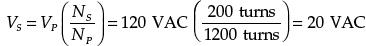
This is an example of a step-down transformer, since the secondary voltage is lower than the primary voltage.
As you can see from the previous example, either winding of a transformer can be used as the primary, provided the windings have enough turns (enough inductance) to induce a voltage equal to the applied voltage without requiring an excessive current. The windings must also have insulation with a voltage rating sufficient for the voltage present.
Now let’s take a look at what happens when you attach a load to the secondary, as shown in Fig. 3.98.
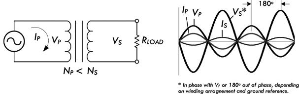
FIGURE 3.98
When a load is attached to the secondary, the secondary current sets up a magnetic field that opposes the field set up by the primary current. For the induced voltage in the primary to equal the applied voltage, the original field must be maintained. The primary must draw enough additional current to set up a field exactly equal and opposite to the field set up by the secondary current. At this point, for practical purposes, we assume that the entire primary current is a result of the secondary load. (This is close to true, since the magnetizing current will be very small in comparison with the primary load current at rated power output.)
Current Ratio
To figure out the relationship between the primary and secondary currents, consider that an ideal transformer is 100 percent efficient (real transformers are around 65 to 99 percent efficient, depending on make), and then infer that all the power dissipated by the load in the secondary will be equal to the power supplied by the primary source. With the help of the generalized power law, we get:
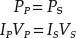
Plugging our transformer voltage equation (3.1) into the VS term, we get:
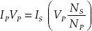
Eliminating the VP from both sides, we get the following useful current relation:
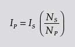
(3.2) Ideal transformer current ratio
Example 3: A transformer with a primary of 180 turns and a secondary with 1260 turns is delivering 0.10 A to a load. What is the primary current?
Answer: Rearranging Eq. 3.2 and solving for the primary current:
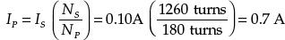
Notice from the previous example that even though the secondary voltage is larger than the primary voltage, the secondary current is smaller than the primary current. The secondary current in an ideal transformer is 180° out of phase with the primary current, since the field in the secondary just offsets the field in the primary. The phase relationship between the currents in the windings holds true no matter what the phase difference between the current and the voltage of the secondary. In fact, the phase difference, if any, between voltage and current in the secondary will be reflected back to the primary as an identical phase difference. Note that phase, however, can be selected according to how you pull the secondary out—see the following note.
By now you may be a bit annoyed with the notion of phase. For example, to say that the primary voltage is out of phase with the secondary by 180° is smack in the phase to relativity. Couldn’t you simply wind the secondary winding in a different direction or, more easily, simply reverse the secondary leads to get an output that is within phase? The answer is yes. It is a relativity game with the transformer pins. Figure 3.99 shows two transformers that are identical in every way except for the winding direction of the secondary. The winding A arrangement, when tested with a common ground and oscilloscope, yields in-phase voltages, while the winding in B yields voltage and currents that are 180° out of phase with the primary. To avoid confusion, a convention is used to keep track of the relative polarity between the leads. This convention makes use of what are called phase dots, which are a pair of dots: one placed on the primary side; the other placed on the secondary side. The similar placement of these dots next to the top ends of the primary and secondary windings tells you that whatever instantaneous voltage polarity is seen across the primary winding will be the same as that across the secondary winding. In other words, the phase shift from primary to secondary will be zero degrees. On the other hand, if dots on each winding of the transformer do not match up, the phase shift is 180° between primary and secondary. Of course, the dot convention only tells you which end of each winding is which, relative to the other winding(s). If you want to reverse the phase relationship, all you have to do is swap the winding connections.
FIGURE 3.99
Power Ratio
A moment ago, when deriving the transformer current equation, we assumed that the transfer of power from primary to secondary was 100 percent efficient. However, it is important to realize that there is always some power loss in the resistance of the coils and in the iron core of the transformer. This means that the power taken from the source is greater than the power used in the secondary. This can be stated by the following expression:
PS = n × PP
(3.3) Efficiency factor
where PS is the power output from the secondary, PP is the power input to primary and n is the efficiency factor. The efficiency n is always less than 1. It is usually expressed as a percentage—for example, 0.75 represents an efficiency of 75 percent.
Example 4: What is the power input to the primary if a transformer has an efficiency of 75 percent and its full load output at the secondary is 100 W?
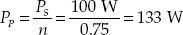
Transformers are typically designed to have highest efficiency at the manufacturer’s rated outputs. Above or below the rated output, the efficiency drops. The amount of power a transformer can handle depends on its own losses (heating of wire and core, etc.). Exceeding the rated power of a transformer can lead to wire meltdown or insulation breakdown. Even when the load is purely reactive, the transformer will still be generating heat loss due to internal resistance of the coils and losses in the core. For this reason, manufacturers also specify a maximum volt-amp rating, or VA-rating, that should not be exceeded.
Impedance Ratio
Using ac Ohm’s law, IP = VP/ZP, and assuming an ideal transformer, where power from the primary is 100 percent transferred to secondary, we can come up with an equation relating the primary and secondary impedances:
Canceling the primary voltage terms, you get the following useful expression:
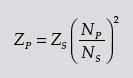
(3.4) Transformer impedance ratio
where ZP is the impedance looking into the primary terminal from the power source, and ZS is the impedance of the load connected to the secondary. Figure 3.100 shows an equivalent circuit.
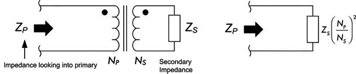
FIGURE 3.100
If the load impedance in the secondary increases, the impedance looking into the primary (from the source’s point of view) will also increase in a manner that is proportional to the ratio of the turns squared.
Example 5: A transformer has a primary with 500 turns and a secondary with 1000 turns. What is the primary impedance if a 2000-Ω load impedance is attached to the secondary?
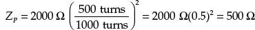
As you can see, by selecting the proper turns ratio, the impedance of a fixed load can be transformed to any desired value (ideally). If transformer losses can be neglected, the transformed (reflected) impedance has the same phase angle as the actual load impedance. Hence, if the load is purely resistive, the load presented by the primary to the power source will also be pure resistance. If the load impedance is complex (e.g., inductance and capacitance are thrown in so that load current and voltage are out of phase with each other), then the primary voltage and current will show the same phase angle.
In electronics, there are many instances where circuits require a specific load resistance (or impedance) for optimum performance. The impedance of the actual load dissipating power may differ widely from the impedance of the source. In this case, a transformer can be used to change the actual load into an impedance of desired value. This is referred to as impedance matching. We can rearrange Eq. 3.4 and get:
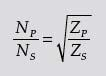
(3.5)
where NP/NS is the required turns ratio—primary to secondary, ZP is the primary impedance required, and ZS is the impedance of the load connected to the secondary.
Example 6: An amplifier circuit requires a 500-Ω load for optimum performance, but is to be connected to an 8.0-Ω speaker. What turns ratio, primary to secondary, is required in the coupling transformer?
Answer:
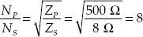
Hence, the primary must have eight times as many turns as the secondary.
Knowing what to set the primary count at depends on low internal losses and leakage current and making sure that the primary has enough inductance to operate with low magnetizing current at the voltage applied to the primary.
Example 7: What are the load impedances “seen” by the voltage sources in Fig. 3.101?
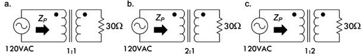
FIGURE 3.101
Answer: (a) 30 Ω, (b) 120 Ω, (c) 8 Ω.
Example 8: If a step-up transformer has a turns ratio of 1:3, what are the voltage ratio, current ratio, and impedance ratio? Assume ratios are given in the form “primary: secondary.”
Answer: Voltage ratio is 1:3, current ratio is 3:1, impedance ratio is 1:9.
Transformer Gear Analogy
It is often helpful to think of transformers as gearboxes. For example, in the gearbox analogy in Fig. 3.102, the primary winding is analogous to the input shaft (where the motor is attached) and the secondary winding is analogous to the output shaft. Current is equivalent to shaft speed (rmp) and voltage is equivalent to torque. In a gearbox, mechanical power (speed multiplied by torque) is constant (neglecting losses) and is equivalent to electrical power (voltage times current), which is also constant. The gear ratio is equivalent to the transformer step-up or step-down ratio. A step-up transformer acts like a reduction gear (in which mechanical power is transferred from a small, rapidly rotating gear to a large, slowly rotating gear): it trades current (speed) for voltage (torque), by transferring power from a primary coil to a secondary coil having more turns. A step-down transformer acts similarly to a multiplier gear (in which mechanical power is transferred from a large gear to a small gear): it trades voltage (torque) for current (speed), by transferring power from a primary coil to a secondary coil having fewer turns.
FIGURE 3.102
Center-Tap Transformers
Rarely do you see transformers in the real world with just four leads—two for the primary and two for the secondary. Many commercial transformers employ center taps. A center tap is simply an electrical connection that is made somewhere between the two ends of a transformer winding. By using a center tap, it is possible to utilize only a fraction of the winding voltage. For example, in Fig. 3.103, a transformer’s secondary is center-tapped midway between its winding, yielding two output voltages VS1 and VS2. If we place a ground reference on the center tap (it is treated now as a common), we see the voltages in terms of phase, as shown in the example circuit in Fig. 3.103. In this case, the two secondary voltages are equal because we assumed that the number of turns on either end of the center tap were the same. In general, the secondary voltages are determined by the turns ratio.
FIGURE 3.103
Center taps can be placed on both the primary side and the secondary side, with multiple taps on either side. For example, a typical power transformer has several secondary windings, each providing a different voltage. Figure 3.104 shows a schematic of a typical power supply transformer. It is possible to join pins with a jumper to get the desired voltage ratios across other pins. Manufacturers will provide you with the voltages between the various tap points, usually specifying CT as the center-tap voltage. Center taps provide flexibility in design and allow varying outputs, which you implement by incorporating switches, for example. We’ll see how a center-tap transformer is used to split incoming 240 VAC for the main into two 120-VAC legs within the circuit breaker of your house, and we’ll also discover how full-wave center-tap rectifier circuits are used in building dc power supplies.
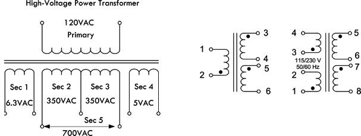
FIGURE 3.104
Real Transformer Characteristics
A perfect or ideal transformer has a primary-to-secondary coupling coefficient of 1. This means that both coils link with all the magnetic flux lines, so that the voltage induced per turn is the same for both coils. This also means that the induced voltage per turn is the same for both primary and secondary coils. Iron core transformers operating at low frequencies come close to being ideal. However, due to various imperfections, such as eddy current, hysteresis losses, internal coil resistance, and skin effects at higher frequencies, this isn’t quite true.
In real transformers, not all of the magnetic flux is common to both windings. Flux not associated with linkage is referred to as leakage flux and is responsible for a voltage of self-induction. There are small amounts of leakage inductance associated with both windings of a transformer. Leakage inductance acts in exactly the same manner as an equivalent amount of ordinary inductance inserted in series with the circuit. The reactance associated with leakage inductance is referred to as leakage reactance, which varies with transformer build and frequency. Figure 3.105 shows a real-life model of a transformer including leakage reactances for both primary and secondary coils, namely, XL1 and XL2. When current flows through a leakage reactance, there is an associated voltage drop. The voltage drop becomes greater with increasing current and increases as more power is taken from the secondary.
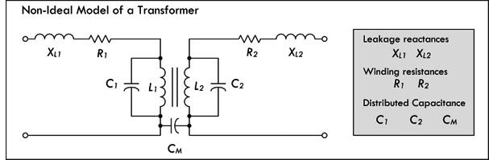
FIGURE 3.105
The internal resistances of a transformer’s windings R1 and R2 also result in voltage drop when there is current flow. Although these voltage drops are not in phase with those caused by leakage reactance, together they result in a lower secondary voltage under load than is indicated by the transformer turns ratio formula.
Another nonideal characteristic of transformers is stray capacitance. An electric field exists between any two points having a different voltage. When current flows through a coil, each turn has a slightly different voltage than its adjacent turns. This results in capacitance between turns and is modeled by C1 and C2 in Fig. 3.105. A mutual capacitance CM also exists between the primary and secondary windings for the same reason. It is also possible for transformer windings to exhibit capacitance relative to nearby metal, such as a chassis, shield, or even the core itself.
Stray capacitance tends to have little influence in power and audio transformers, but becomes influential as the frequencies increase. In RF applications where transformers are used, the stray capacitance can resonate with either the leakage reactance or, at lower frequencies, the winding reactances, especially under very light or zero-ohm loads. In the frequency region around resonance, transformers do not exhibit behavior as described by the previous transformer equations.
Iron core transformers also experience losses with hysteresis and eddy current, as was discussed in Sec. 2.24. These losses, which add to the required magnetizing current, are equivalent to adding a resistance in parallel to R1 in Fig. 3.105.
TRANSFORMER PRECAUTIONS
There are three basic rules to observe when using a transformer. First, never apply a voltage that is greatly in excess of the transformer winding ratings. Second, never allow a significant direct current to flow through any winding not designed to handle it. Third, don’t operate the transformer at a frequency outside the range specified by the manufacturer. Applying a voltage of, say, 120 VAC to a secondary in hopes of achieving 1200 VAC at the primary is a bad idea—expect smoke and combustion, accompanied by insulation failure. Similar results can be expected with excessive dc current through the primary. In terms of frequency, a 60-Hz transformer driven at 20 Hz will draw too much magnetizing current and will run dangerously hot.
3.8.2 Transformer Construction
Cores
Transformers used for power and audio frequencies have cores made of many thin laminations of silicon steel. The laminations reduce eddy currents, as discussed in Sec. 2.24. A typical laminated core is made from E-shaped and I-shaped pieces, sandwiched together, as shown in Fig. 3.106. Transformers made from these cores are therefore often referred to as EI transformers.
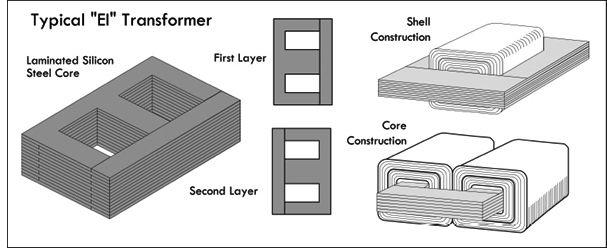
FIGURE 3.106
Two common core shapes in use are shown in Fig. 3.106. In the shell construction, both the primary and the secondary windings are wound around the same inner leg, while in the core construction, primary and secondary windings are wound on separate legs. The core construction is often implemented to minimize capacitive effects between primary and secondary windings, or when one winding is to be operated at very high voltage. The size, shape, and type of core material, as well as the frequency range, influence the required number of turns in each winding. In most transformers, the coils are wound in layers, with a sheet of special paper insulation placed between each layer. A thicker insulation is used between adjacent coils and between the core and the first coil.
Powdered iron cores, with their low eddy current characteristics, are used in transformers that operate above mains frequencies (60 Hz) up to several kilohertz. These cores have a very high permeability and thus provide decent stepping capability for their size. Transformers that are used in even higher-frequency applications, such as RF, often contain cores made from nonconductive magnetic ceramic materials or ferrites.
A common core shape for powdered iron and ferrite core transformers is the toroid, as shown in Fig. 3.107a. The closed ring shape of the toroid eliminates air gaps inherent in the construction of an EI core. The primary and secondary coils are often wound concentrically to cover the entire surface of the core. Ferrite cores are used at higher frequencies, typically between a few tens of kilohertz to a megahertz. In general, toroidal transformers are more efficient (around 95 percent) than cheaper laminated EI transformers; they are more compact (about half the size), weigh less (about half), have less mechanical hum (making them superior in audio applications), and have lower off-load losses (making them more efficient in standby circuits).
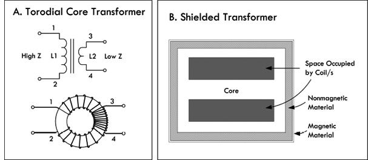
FIGURE 3.107
Shielding
To eliminate mutual capacitance between windings within a transformer, an electrostatic shield is often placed between the windings. Some transformers may incorporate a magnetic shield, as shown in Fig. 3.107b. The magnetic shield helps prevent outside magnetic fields (interference) from inducing currents within the inner windings. The shield also helps prevent the transformer from becoming an interference radiator itself.
For small-power and signal transformers, the windings are made from solid wire copper, insulated typically with enamel; sometimes additional insulation is used for safety. Larger-power transformers may be wound with copper or aluminum wire, or even strip conductors for very heavy current; in some cases multistrand conductors are used to reduce skin effect losses. High-frequency transformers operating in the kilohertz range often have windings made of Litz wire to minimize skin effects. For signal transformers, the windings may be arranged in a way to minimize leakage inductance and stray capacitance in order to improve high-frequency response.
3.8.3 Autotransformers and Variable Transformers
An autotransformer is similar to a standard transformer; however, it uses only one single coil and a center tap (or taps) to make primary and secondary connections. See Fig. 3.108. As with standard transformers, autotransformers can be used to step up or step down voltages, as well as match impedances; however, they will not provide electrical isolation like a standard transformer, since their primary and secondary are on the same coil—there is no electrical isolation between the two coils.
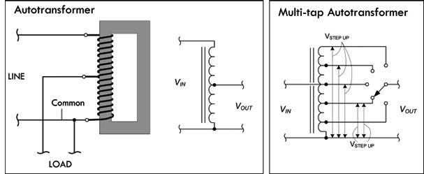
FIGURE 3.108
Although an autotransformer has only one winding, the laws of induction that were used with a standard transformer to step up and step down voltage can be applied just as well. This also applies to principles of current and impedance as a function of the number of winding turns. In Fig. 3.108, the current in the common winding is the difference between the line current (primary current) and the load current (secondary current), since these currents are out of phase. Hence, if the line and load currents are nearly equal, the common section of the winding may be wound with comparatively small wire. The line and load currents will be equal only when the primary (line) and secondary (load) voltages are close in magnitude.
Autotransformers are often used in impedance-matching applications. They are also frequently used for boosting or reducing the power-line voltage by relatively small amounts. Figure 3.108 shows a switch-stepped autotransformer whose output voltage can be set to any number of values determined by the switch contact position.
A variable transformer or Variac (commercial name) is similar to the switch-stepped autotransformer in Fig. 3.108; however, it has a continuous wiper action along a circular coil, as shown in Fig. 3.109. A Variac acts like an adjustable ac voltage source. Its primary is connected to the hot and neutral of the 120-V line voltage, while the secondary leads consist of the neutral and an adjustable wiper that moves along the single core winding.
FIGURE 3.109 (a) Nonisolated 120-V Variac whose output voltage is varied by rotating a wiper. (b) Nonisolated 240-V Variac. (c) A homemade variable ac supply with isolation protection provided by means of an isolation transformer. (d) ac power supply that houses an isolation transformer, Variac, switch, fuse, ac outlet, and meter.
Being able to adjust the line voltage is a very useful trick when troubleshooting line-power equipment, where the fuse instantly blows at normal line voltage. Even without a fuse blowing, troubleshooting at around 85 V may reduce the fault current.
It is important to note that a Variac by itself does not provide isolation protection like a standard transformer, since the primary and secondary shared a common winding. It is therefore important, if you plan to work on ungrounded, “hot chassis” equipment, that you place an isolation transformer before the Variac—never after it. If you don’t, shock hazards await. Figure 3.109c shows a schematic of such an arrangement. It includes a switch and fuse protection, as well as current and voltage meters, all of which create an adjustable, fully isolated ac power source.
To avoid the hassle of cascading a Variac and isolation transformer together, simply get an ac power supply that houses both elements together in one package—see Fig. 3.109d.
Boosting and Bucking
We just saw how autotransformers are used in applications requiring a slight boost or reduction in voltage to a load. It is possible to accomplish the same effect by using a normal (isolated) transformer with just the right primary/secondary turns ratio. There is still another alternative—use a step-down configuration with secondary winding connected in a series-aiding (“boosting”) or series-opposing (“bucking”) configuration, as shown in Fig. 3.110.
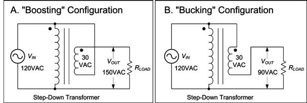
FIGURE 3.110
In the boosting configuration, the secondary coil’s polarity is oriented so that its voltage directly adds to the primary voltage. In the bucking configuration, the secondary coil’s polarity is oriented so that its voltage directly subtracts from the primary voltage. An autotransformer does the same job as the boosting and bucking functions displayed here, but using only a single winding, making it cheaper and lighter to manufacture.
3.8.4 Circuit Isolation and the Isolation Transformer
Transformers perform an important role in isolating one circuit from another. Figure 3.111 shows an example application that uses a transformer to isolate a load connected to an ac outlet. In this application, there is no need to step up or step down the voltage, so the transformer has a 1:1 winding ratio. Such a transformer is referred to as an isolation transformer. In Fig. 3.111, a mains isolation transformer is used to isolate a load from the source, as well as provide ground fault protection. An isolation transformer should be used whenever you work on nongrounded equipment, with no input isolation, such as switch-mode power supplies.
FIGURE 3.111
In your home wiring, the neutral (white) and the ground (green) connections are tied together at the main junction box, so they are basically at the same potential—0 V, or earth ground. If you accidentally touch the hot wire while being in contact with a grounded object, current will pass through your body and give you a potentially fatal shock. With an isolation transformer, the secondary winding leads act as a 120-V source and return, similar to the mains’ hot and neutral, but with an important difference. Neither the secondary source nor return runs are tied to earth ground! This means that if you touch the secondary source or return while being in contact with a grounded object, no current will flow through your body. Current only wants to pass between the secondary source and return runs. (Note that all transformers provide isolation, not just line isolation transformers. Therefore, equipment with input power transformers already have basic isolation protection built in. Isolation transformers used for laboratory work are explained in greater detail in Sec. 7.5.12.)
Isolation transformers are also typically constructed with two isolated Faraday shields between the primary and secondary windings. The use of the two shields diverts high-frequency noise, which would normally be coupled across the transformer to ground. Increasing the separation between the two Faraday shields minimizes the capacitance between the two and, hence, the coupling of noise between the two. Therefore, the isolation transformer acts to clean up line power noise before being delivered to a circuit.
3.8.5 Various Standard and Specialized Transformers
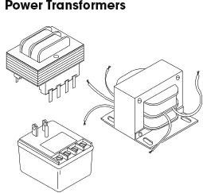
These transformers are used primarily to reduce line voltage. They come in a variety of different shapes, sizes, and primary and secondary winding ratios. They often come with taps and multiple secondary windings. Color-coded wires are frequently used to indicate primary and secondary leads (e.g., black wires for primary, green for secondary, and yellow for tap lead is one possibility). Other transformers use pins for primary, secondary, and tapped leads, allowing them to be mounted on a PC board. You can also find transformers in wall-mount packages that plug directly into an ac outlet, with screw-in terminals as secondary and tapped leads.
FIGURE 3.112
Audio transformers are used primarily to match impedances between audio devices (e.g., between microphone and amplifier or amplifier and speaker), though they can be implemented in other ways as well. They work best at audio frequencies from 20 Hz to 20 kHz. Outside this range they will reduce or block signals. They come in a variety of shapes and sizes and typically contain a center tap in both the primary and secondary windings. Some come with color-coded wires to specify leads, while other audio transformers have pinlike terminals that can be mounted on PC boards. Spec tables provide dc resistance values for primary and secondary windings to help you select the appropriate transformer for the particular matching application. Besides performing simple impedance matching, audio transformers can be used to step up or step down a signal voltage, convert a circuit from unbalanced to balanced and vice versa, block dc current in a circuit while allowing ac current to flow, and provide basic isolation between one device and another. Note that audio transformers have a maximum input level that cannot be exceeded without causing distortion. Also, audio transformers cannot step up a signal by more than about 25 dB when used in typical audio circuits. Because of this, an audio transformer cannot be substituted for a microphone preamp. If more than 25 dB of gain is required, an active preamp must be used instead of a transformer.
FIGURE 3.113
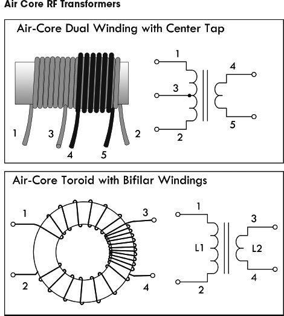
Air core transformers are special devices used in radio-frequency circuits. (They are used for RF coupling, such as antenna tuning and impedance matching.) Unlike steel or ferrite core transformers, the core is made from a nonmagnetic form, usually a hollow tube of plastic. The degree of coupling between windings in an air core transformer is much less than that of a steel core transformer; however, there are no losses associated with eddy currents, hysteresis, saturation, and so on, as is the case with magnetic cores. This becomes critically important in RF applications—at high frequencies, steel core transformers experience significant losses. Toroidal air core transformers aren’t common nowadays, except in VHF (very high frequency) work. Today, special coupling networks and RF powdered-iron and ferrite toroids have generally replaced air cores, except in situations where the circuit handles very high power or the coils must be very temperature stable.
FIGURE 3.114
3.8.6 Transformer Applications
There are three principal uses for transformers: to transform voltages and currents from one level to another, to physically isolate the primary circuit from the secondary, and to transform circuit impedances from one level to another. Here are some examples in action.
Toroidal ferrite and powdered-iron transformers are used from a few hundred hertz well into the UHF spectrum. The principal advantage of this type of core is self-shielding and low losses due to eddy currents. The permeability/size ratio is also very large, making them compact devices requiring fewer coil turns than traditional transformers. The most common ferrite toroid transformer is the conventional broadband transformer. Broadband transformers provide dc isolation between the primary and secondary circuits. The primary of a step-down impedance transformer is wound to occupy the entire core, with the secondary wound over the primary, as shown in Fig. 3.115. This style of transformer is frequently used in impedance matching. In standard broadcast radio receivers, these transformers operate in a frequency range from 530 to 1550 kHz. In shortwave receivers, RF transformers are subjected to frequencies up to about 20 MHz; in radar, it approaches upward of 200 MHz.
FIGURE 3.115
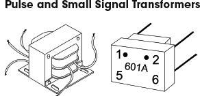
Pulse transformers are special transformers optimized for transmitting rectangular electrical pulses—ones with fast rise and fall times and constant amplitude. A small signal transformer is a small version of a pulse transformer. These devices are used in digital logic and telecom circuits, often for matching logic drivers to transmission lines. Medium-size power versions are used in power-control circuits such as camera flash controllers, while larger-power versions are used in electrical power distribution to interface low-voltage control circuitry with high-voltage power semiconductive gates, such as TRIACs, IGBTs, thyristors, and MOSFETs. Special high-voltage pulse transformers are used to generate high-power pulses for radar, particle accelerators, or other pulsed power applications.
To minimize pulse shape distortion, a pulse transformer requires very low leakage inductance and distributed capacitance, and a high open-circuit inductance. Low coupling capacitance is also important in power-pulse transformer applications to protect circuitry on the primary side from high-power transients created by load.
FIGURE 3.116
Current transformers are special devices used primarily to measure larger currents that would be too dangerous to measure with an ammeter. They are designed to provide a current in their secondary that is proportional to the current flowing in the primary. A typical current transformer resembles a toroidal core inductor with many secondary windings. The primary coil consists of simply passing a single cable-to-be-measured (insulated) through the center of the toroid. The output current through the secondary is many times smaller than the actual current through the cable (primary). These transformers are specified by their input and output current ratio (400:5, 2000:5, etc.). Current transformers designed for electrical supply applications are designed to drive 5-A (full-scale) meters. There are also wideband current transformers used to measure high-frequency waveforms and pulsed currents.
FIGURE 3.117
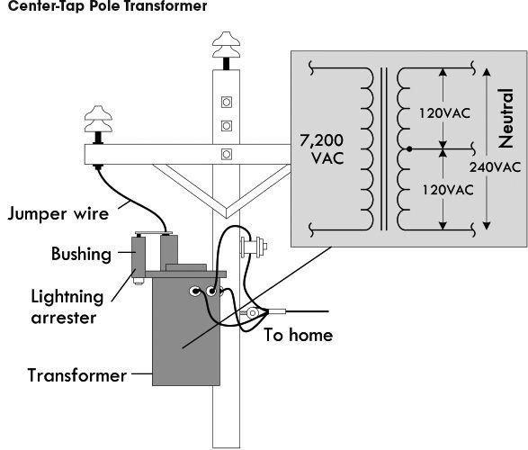
FIGURE 3.118 In the United States, main power lines carry ac voltages upward of several thousand volts. A center-tap pole transformer is used to step down the line voltage to 240 V. The tap then acts to break this voltage up into 120-V portions. Small appliances, such as TVs, lights, and hair dryers can use either the top line and the neutral line or the bottom line and the neutral line. (The neutral is grounded to a ground rod through a link between neutral and ground buses in the breaker box.) Larger appliances, such as stoves, refrigerators, and clothes dryers often make use of the 240-V terminals and often use the neutral terminal as well. See App. A for more on power distribution and home wiring.
FIGURE 3.119 Here a step-down low-voltage transformer is used to drive quartz halogen landscape lamps. The lamps in this case don’t care if the voltage is ac since the frequency (60 Hz) is too fast for there to be any noticeable variation in luminous output. Most commercial transformers used for landscape wiring, or for driving solenoid-powered sprinkler systems, will come with multiple outputs. This transformer provides 12-V, 24-V, and 14-V outputs. The 14-V output may be used to drive 12-V lamps if there is an anticipated voltage drop along long cable runs; the 24-V output may be used to drive 24-V devices. Note that the total load should not consume more power than the transformer’s rated output capacity. For example, this 100-W transformer should not be used to drive more than, say, ten 10-watt lamps or five 20-watt lamps. Exceeding this will result in lamp dimming.
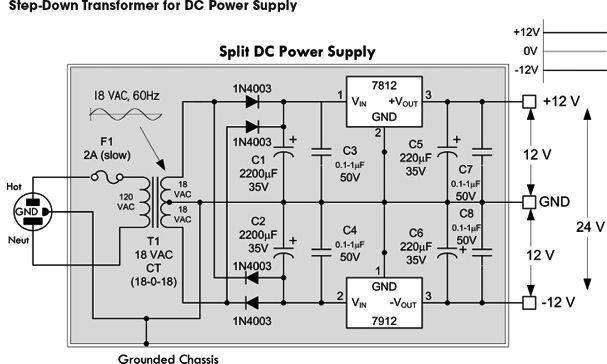
FIGURE 3.120 Transformers are essential ingredients in power supply design. Here a 120-V to 18V-0-18V center-tap transformer is used to create a split ±12-V dc power supply. The transformer acts to reduce the voltage to 18 VAC across each coil end and the center tap. The rectifier section built from diodes acts to eliminate negative swings in the upper positive section and eliminate positive swings in the lower section. Capacitors are thrown in to remove the pulsating dc and make the voltages appear dc. The regulators are used to set the dc voltages to exactly +12 V and −12 V. See Chap. 11 on power supplies for more details.
There are various ways in which to create dc power supplies. Figure 3.121 shows the four basic schemes used. Each scheme has its pros and cons, which are briefly described here and in greater detail in the sections on diodes and power supply in chapters to come.
(a) Dual complementary rectifier: Very efficient and best choice for two balanced outputs with a common return. The output windings are bifilar wound for precisely matched series resistances, coupling, and capacitance.
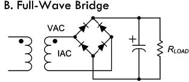
(b) Full-wave bridge: Most efficient use of transformer’s secondary winding. Best for high-voltage outputs.
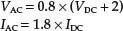
(c) Half-wave rectifier: This design should be avoided for power supply design, as it is an inefficient use of the transformer. This arrangement causes the core to become polarized and to saturate in one direction.
(d) Full-wave center tap: While more efficient than the half-wave rectifier circuit, the full wave does not make full use of secondaries, but is good for high-current, low-voltage applications, as there is only one diode drop per positive half cycle.
FIGURE 3.121
(a) Maximum power is transferred to a load if the load impedance is equal to the Thevenin impedance of the network supplying power. To supply maximum power transfer from the audio amplifier with an output impedance of 500 Ω to an 8-Ω speaker, we must properly match the load impedance with that of the output impedance (or Thevenin impedance) of the source. If we were not to match impedance and attempt to drive the 8-Ω speaker directly, the impedance mismatch would result in very poor (low peak power) performance. Also, the amplifier would dissipate considerable power in the form of heat as it tries to drive the low-impedance speaker.
When going from a high-impedance (high-voltage, low-current) source to a low-impedance (low-voltage, high-current) load, we need to use a step-down transformer. To determine the turns ratio required, we refer back to Eq. 5:
In other words, the required winding ratio is 7.906:1. With such a transformer in place, the speaker will load the amplifier to just the right degree, drawing power at the correct voltage and current levels for the most efficient power transfer to load.
(b) Note that most transistor or IC hi-fi amplifier and speaker systems have amplifiers with output impedances much lower than the speaker impedance. A typical speaker impedance is 8 Ω, for example, but most hi-fi amplifiers have an output impedance of 0.1 Ω or less. This not only ensures that most of the audio energy is transferred to the speaker, but also that the amplifier’s low output impedance provides good electrical damping for the speaker’s moving voice coil—giving higher fidelity.
Older valve amplifiers needed a different form of impedance matching, because output valves generally had fairly fixed and relatively high output impedance so they couldn’t deliver audio energy efficiently into the low load impedance of a typical speaker. So an output transformer had to be used to produce a closer impedance match. The transformer stepped up the impedance of the speaker, so that it gave the output valve an effective load of a few thousand ohms; this was at least comparable to the valve’s own output impedance, so only a small amount of energy was wasted as heat in the valve.
(c) The only area in audio where impedance matching (of a different kind) tends to be important is with transducers such as microphones, turntable pickups, and tape heads. Here, the transducer often needs to be provided with particular load impedance, but not in order to maximize power or signal transfer.
The diagram in (c) shows a typical matching arrangement for a microphone connected through a matching transformer to an input stage (unity gain stage) of an audio amplifier IC.
FIGURE 3.122
3.9 Fuses and Circuit Breakers
Fuses and circuit breakers are devices designed to protect circuits from excessive current flows, which are often a result of large currents that result from shorts or sudden power surges. A fuse contains a narrow strip of metal that is designed to melt when current flow exceeds its current rating, thereby interrupting power to the circuit. Once a fuse blows (wire melts), it must be replaced with a new one. A circuit breaker is a mechanical device that can be reset after it “blows.” It contains a spring-loaded contact that is latched into position against another contact. When the current flow exceeds a breaker’s current rating, a bimetallic strip heats up and bends. As the strip bends, it “trips” the latch, and the spring pulls the contacts apart. To reset the breaker, a button or rockerlike switch is pressed to compress the spring and reset the latch.
FIGURE 3.123
In homes, fuses/circuit breakers are used to prevent the wires within the walls from melting under excessive current flow (typically upwards of 15 A); they are not designed to protect devices, such as dc power supplies, oscilloscopes, and other line-powered devices, from damage. For example, if an important current-limiting component within a test instrument (powered from the main line) shorts out, or if it is connected to an extremely large test current, the circuit within the device may be flooded with, say, 10 A instead of 0.1 A. According to P = I2R, the increase in wattage will be 10,000 times larger, and as a result, the components within the circuit will fry. As the circuit is melting away, no help will come from the main 15-A breaker—the surge in current through the device may be large, but not large enough to trip the breaker. For this reason, it is essential that each individual device contain its own properly rated fuse.
Fuses come in fast-action (quick-blow) and time-lag (slow-blow) types. A fast-acting fuse will turn off with just a brief surge in current, whereas a time-lag fuse will take a while longer (a second or so). Time-lag fuses are used in circuits that have large turn-on currents, such as motor circuits, and other inductive-type circuits.
In practice, a fuse’s current rating should be around 50 percent larger than the expected nominal current rating. The additional leeway allows for unexpected, slight variations in current and also provides compensation for fuses whose current ratings decrease as they age.
Fuses and breakers that are used with 120-V ac line power must be placed in the hot line (black wire in the United States) and must be placed before the device they are designed to protect. If a fuse or circuit breaker is placed in the neutral line (white wire), the full line-voltage will be present at the input, even if the fuse/circuit breaker blows. Circuit breakers that are used to protect 240-V ac appliances (e.g., stoves, clothes dryers) have fuses on all three input wires (both the hot wires and the neutral wire) (see Fig. 3.124). Power distribution and home wiring are covered in detail in App. A.
FIGURE 3.124
3.9.1 Types of Fuses and Circuit Breakers
These are made by encapsulating a current-sensitive wire or ceramic element within a glass cylinder. Each end of the cylinder contains a metal cap that acts as a contact lead. Fuses may be fast-acting or time-lagging. They are used in instruments, electric circuits, and small appliances. Typical cylinders come in ¼ × 1¼ in or 5 × 20 mm sizes. Current ratings range from around ¼ to 20 A, with voltage ratings of 32, 125, and 250 V.
These are fast-acting fuses with bladelike contacts. They are easy to install and remove from their sockets. Current ratings range from 3 to 30 A, with voltage ratings of 32 and 36 V. They are color-coded according to current rating and are used primarily as automobile fuses.
Other types of fuses include subminiature fuses and high-current screw-in and cartridge fuses. Subminiature fuses are small devices with two wire leads that can be mounted on PC boards. Current ratings range from 0.05 to 10 A. They are used primarily in miniature circuits. Cartridge fuses are designed to handle very large currents. They are typically used as main power shutoffs and in subpanels for 240-V applications such as electric dryers and air conditioners. Cartridge fuses are wrapped in paper, like shotgun shells, and come with either ferrule or knife-blade contacts. Ferrule-contact fuses protect from up to 60 A, while knife-blade contact fuses are rated at 60 A or higher.
These come in both rocker and push-button forms. Some have manual resets, while others have thermally actuated resets (they reset themselves as they cool down). Main-line circuit breakers are rated at 15 to 20 A. Smaller circuit breakers may be rated as low as 1 A.
FIGURE 3.125
Semiconductors
4.1 Semiconductor Technology
The most important and perhaps most exciting electrical devices used today are built from semiconductive materials. Electronic devices, such as diodes, transistors, thyristors, thermistors, photovoltaic cells, phototransistors, photoresistors, lasers, and integrated circuits, are all made from semiconductive materials, or semiconductors.
FIGURE 4.1
4.1.1 What Is a Semiconductor?
Materials are classified by their ability to conduct electricity. Substances that easily pass an electric current, such as silver and copper, are referred to as conductors. Materials that have a difficult time passing an electric current, such as rubber, glass, and Teflon, are called insulators. There is a third category of material whose conductivity lies between those of conductors and insulators. This third category of material is referred to as a semiconductor. A semiconductor has a kind of neutral conductivity when taken as a group. Technically speaking, semiconductors are defined as those materials that have a conductivity σ in the range between 10−7 and 103 mho/cm (see Fig. 4.2). Some semiconductors are pure-elemental structures (e.g., silicon, germanium), others are alloys (e.g., nichrome, brass), and still others are liquids.
FIGURE 4.2
Silicon is the most important semiconductor used in building electrical devices. Other materials such as germanium and selenium are sometimes used, too, but they are less popular. In pure form, silicon has a unique atomic structure with very important properties useful in making electrical devices.
FIGURE 4.3
Silicon is ranked second in the order of elements appearing in the earth’s crust, an average of 27 percent occurring in igneous rocks. It is estimated that a cubic mile of seawater contains about 15,000 tons of silicon. It is extremely rare to find silicon in its pure crystalline form in nature, and before it can be used in making electronic devices, it must be separated from its binding elements. After individuals—chemists, material scientists, etc.—perform the purification process, the silicon is melted and spun into a large “seed” crystal. This long crystal can then be cut up into slices or wafers that semiconductor-device designers use in making electrical contraptions.
FIGURE 4.4
For the semiconductor-device designer, a silicon wafer alone does not prove very useful. A designer would not use the silicon wafer in its pure form to build a device; it just does not have quite the right properties needed to be useful. A semiconductor-device designer is looking for a material that can be made to alter its conductive state, acting as a conductor at one moment and as an insulator at another moment. For the material to change states, it must be able to respond to some external force applied at will, such as an externally applied voltage. A silicon wafer alone is not going to do the trick. In fact, a pure silicon wafer acts more as an insulator than a conductor, and it does not have the ability to change conductive states when an external force is applied. Every designer today knows that a silicon wafer can be transformed and combined with other transformed silicon wafers to make devices that have the ability to alter their conductive states when an external force is applied. The transforming process is referred to as doping.
Doping
Doping refers to the process of “spicing up” or adding ingredients to a silicon wafer in such a way that it becomes useful to the semiconductor-device designer. Many ingredients can be added in the doping process, such as antimony, arsenic, aluminum, and gallium. These ingredients provide specialized characteristics such as frequency response to applied voltages, strength, and thermal integrity, to name a few. By far, however, the two most important ingredients that are of fundamental importance to the semiconductor-device designer are boron and phosphorus.
When a silicon wafer is doped with either boron or phosphorus, its electrical conductivity is altered dramatically. Normally, a pure silicon wafer contains no free electrons; all four of its valence electrons are locked up in covalent bonds with neighboring silicon atoms (see Fig. 4.5). Without any free electrons, an applied voltage will have little effect on producing an electron flow through the wafer.
A silicon wafer in pure form doesn’t contain any free charge carriers; all the electrons are locked up into covalent bonds between neighboring atoms.
FIGURE 4.5
However, if phosphorus is added to the silicon wafer, something very interesting occurs. Unlike silicon, phosphorus has five valence electrons instead of four. Four of its valence electrons will form covalent bonds with the valence electrons of four neighboring silicon atoms (see Fig. 4.6). However, the fifth valence electron will not have a “home” (binding site) and will be loosely floating about the atoms. If a voltage is applied across the silicon-phosphorus mixture, the unbound electron will migrate through the doped silicon toward the positive voltage end. By supplying more phosphorus to the mixture, a larger flow of electrons will result. Silicon that is doped with phosphorus is referred to as n-type silicon, or negative-charge-carrier-type silicon.
A phosphorus atom added to a silicon wafer provides an extra unbound electron that aids in conduction. Silicon doped with phosphorus is called re-type silicon.
FIGURE 4.6
Now, if you take pure silicon and add some boron, you will see a different kind of conduction effect. Boron, unlike silicon or phosphorus, contains only three valence electrons. When it is mixed with silicon, all three of its valence electrons will bind with neighboring silicon atoms (see Fig. 4.7). However, there will be a vacant spot—called a hole—within the covalent bond between one boron and one silicon atom. If a voltage is applied across the doped wafer, the hole will move toward the negative voltage end, while a neighboring electron will fill in its place. Holes are considered positive charge carriers even though they do not contain a physical charge per se. Instead, it only appears as if a hole has a positive charge because of the charge imbalance between the protons within the nucleus of the silicon atom that receives the hole and the electrons in the outer orbital. The net charge on a particular silicon atom with a hole will appear to be positive by an amount of charge equivalent to one proton (or a “negative electron”). Silicon that is doped with boron is referred to as p-type silicon, or positive-charge-carrier-type silicon.
When boron is added to silicon, a hole is formed. This hole acts like a positive charge (see text) that aids in conduction. Silicon doped with boron is called p-type silicon.
FIGURE 4.7
As you can see, both n-type and p-type silicon have the ability to conduct electricity; one does it with extra unbound electrons (n-type silicon), and the other does it with holes (p-type silicon).
A Note to Avoid Confusion
Boron atoms have three valence electrons, not four like silicon. This means that the combined lattice structure has fewer free valence electrons as a whole. However, this does not mean that a p-type silicon semiconductor has an overall positive charge; the missing electrons in the structure are counterbalanced by the missing protons in the nuclei of the boron atoms. The same idea goes for n-type silicon, but now the extra electrons within the semiconductor are counterbalanced by the extra protons within the phosphorus nuclei.
Another Note to Avoid Confusion (Charge Carriers)
What does it mean for a hole to flow? I mean, a hole is nothing, right? How can nothing flow? Well, it is perhaps misleading, but when you hear the phrase “hole flow” or “flow of positive charge carriers in p-type silicon,” electrons are in fact flowing. You may say, doesn’t that make this just like the electron flow in n-type silicon? No. Think about tipping a sealed bottle of water upside down and then right side up (see Fig. 4.8). The bubble trapped in the bottle will move in the opposite direction of the water. For the bubble to proceed, water has to move out of its way. In this analogy, the water represents the electrons in the p-type silicon, and the holes represent the bubble. When a voltage is applied across a p-type silicon semiconductor, the electrons around the boron atom will be forced toward the direction of the positive terminal. Now here is where it gets tricky. A hole next to a boron atom will be pointing toward the negative terminal. This hole is just waiting for an electron from a neighboring atom to fall into it, due in part to the lower energy configuration there. Once an electron, say, from a neighboring silicon atom, falls into the hole in the boron atom’s valence shell, a hole is briefly created in that silicon atom’s valence shell. The electrons in the silicon atom lean toward the positive terminal, and the newly created hole leans toward the negative terminal. The next silicon atom over will let go of one of its electrons, and the electron will fall into the hole, and the hole will move over again—the process continues, and it appears as if the hole flows in a continuous motion through the p-type semiconductor.
FIGURE 4.8
A Final Note to Avoid Confusion
And finally, why is a hole called a positive charge carrier? How can “nothing” carry a positive charge? Well, what’s going on here is this: A hole, as it moves through the mostly silicon-based crystal, causes a brief alteration in the electrical field strength around the silicon atom in the crystal where it happens to be situated. When an electron moves out of the way, thus creating a new hole, this silicon atom as a whole will be missing an electron, and hence the positive charge from the nucleus of the silicon atom will be felt (one of the protons is not counterbalanced). The “positive charge carrier” attributed to holes comes from this effective positive nuclear charge of the protons fixed within the nucleus.
4.1.2 Applications of Silicon
You may be asking yourself, Why are these two new types of silicon (n-type and p-type) so useful and interesting? What good are they for semiconductor-device designers? Why is there such a fuss over them? These doped silicon crystals are now conductors. Big deal, right? Yes, we now have two new conductors, but the two new conductors have two unique ways of passing an electric current—one does it with holes, the other with electrons. This is very important.
The manners in which n-type and p-type silicon conduct electricity (electron flow and hole flow) are very important in designing electronic devices such as diodes, transistors, and solar cells. Some clever people figured out ways to arrange slabs, chucks, strings, etc. made of n-type and p-type silicon in such a way that when an external voltage or current is applied to these structures, unique and very useful features result. These unique features are made possible by the interplay between hole flow and electron flow between the n-type and p-type semiconductors. With these new n-type/p-type contraptions, designers began building one-way gates for current flow, opening and closing channels for current flow controlled by an external electrical voltage and/or current. Folks figured out that when an n-type and a p-type semiconductor were placed together and a particular voltage was applied across the slabs, light, or photons, could be produced as the electrons jumped across the junction between the interface. It was noticed that this process could work backward as well. That is, when light was exposed at the np junction, electrons were made to flow, thus resulting in an electric current. A number of clever contraptions have been built using n-type and p-type semiconductor combinations. The following chapters describe some of the major devices people came up with.
FIGURE 4.9
A diode is a two-lead semiconductor device that acts as a one-way gate to electric current flow. When a diode’s anode lead is made more positive in voltage than its cathode lead—a condition referred to as forward biasing—current is permitted to flow through the device. However, if the polarities are reversed (the anode is made more negative in voltage than the cathode)—a condition referred to as reversed biasing—the diode acts to block current flow.
FIGURE 4.10
Diodes are used most commonly in circuits that convert ac voltages and current into dc voltages and currents (e.g., ac/dc power supply). Diodes are also used in voltage-multiplier circuits, voltage-shifting circuits, voltage-limiting circuits, and voltage-regulator circuits.
4.2.1 How p-n Junction Diodes Work
A p-n junction diode (rectifier diode) is formed by sandwiching together n-type and p-type silicon. In practice, manufacturers grow an n-type silicon crystal and then abruptly change it to a p-type crystal. Then either a glass or plastic coating is placed around the joined crystals. The n side is the cathode end, and the p side is the anode end.
The trick to making a one-way gate from these combined pieces of silicon is getting the charge carriers in both the n-type and p-type silicon to interact in such a way that when a voltage is applied across the device, current will flow in only one direction. Both n-type and p-type silicon conducts electric current; one does it with electrons (n-type), and the other does it with holes (p-type). Now the important feature to note here, which makes a diode work (act as a one-way gate), is the manner in which the two types of charge carriers interact with each other and how they interact with an applied electrical field supplied by an external voltage across its leads. Below is an explanation describing how the charge carriers interact with each other and with the electrical field to create an electrically controlled one-way gate.
When a diode is connected to a battery, as shown here, electrons from the n side and holes from the p side are forced toward the center (pn interface) by the electrical field supplied by the battery. The electrons and holes combine, and current passes through the diode. When a diode is arranged in this way, it is said to be forward-biased.
When a diode is connected to a battery, as shown here, holes in the n side are forced to the left, while electrons in the p side are forced to the right. This results in an empty zone around the p-n junction that is free of charge carriers, better known as the depletion region. This depletion region has an insulative quality that prevents current from flowing through the diode. When a diode is arranged in this way, it is said to be reverse-biased.
FIGURE 4.11
A diode’s one-way gate feature does not work all the time. That is, it takes a minimal voltage to turn it on when it is placed in forward-biased direction. Typically for silicon diodes, an applied voltage of 0.6 V or greater is needed; otherwise, the diode will not conduct. This feature of requiring a specific voltage to turn the diode on may seem like a drawback, but in fact, this feature becomes very useful in terms of acting as a voltage-sensitive switch. Germanium diodes, unlike silicon diodes, often require a forward-biasing voltage of only 0.2 V or greater for conduction to occur. Figure 4.12 shows how the current and voltage are related for silicon and germanium diodes.
FIGURE 4.12
Another fundamental difference between silicon diodes and germanium diodes, besides the forward-biasing voltages, is their ability to dissipate heat. Silicon diodes do a better job of dissipating heat than germanium diodes. When germanium diodes get hot—temperatures exceeding 85°C—the thermal vibrations affect the physics inside the crystalline structure to a point where normal diode operation becomes unreliable. Above 85°C, germanium diodes become worthless.
4.2.2 Diode Water Analogy
A diode (or rectifier) acts as a one-way gate to current flow—see the water analogy in Fig. 4.13. Current flows in the direction of the arrow, from anode (+) to cathode (−), provided the forward voltage VF across it exceeds what’s called the junction threshold voltage. As a general rule of thumb, silicon p-n junction diodes have about a 0.6-V threshold, germanium diodes a 0.2-V threshold, and Schottky diodes a 0.4-V threshold. However, don’t take this rule too seriously, because with real-life components, you’ll find these thresholds may be a few tenths of a volt off. For example, it’s entirely possible for a p-n junction diode’s threshold to be anywhere between 0.6 and 1.7 V; for germanium, 0.2 to 0.4 V; and for Schottky diodes, 0.15 to 0.9 V.
FIGURE 4.13
Note that if you actually put 12 V across a forward-biased diode as shown in Fig. 4.13, a very large current would flow, probably destroying the diode. Also, the axes of Fig. 4.13 are not to scale.
In terms of limits, avoid supplying a diode with a forward current IF beyond its peak current rating (IOmax). If you do, you’ll get internal junction meltdown. Likewise, avoid applying a reverse voltage VR any bigger than the diode’s peak inverse voltage (PIV) rating. This, too, can render a diode worthless. See the graph in Fig. 4.13.
4.2.3 Kinds of Rectifiers/Diodes
There are numerous types of diodes, each specifically designed to work better in one application or another. Diodes for high-power applications (switching, power supplies, etc.) which draw lots of current or rectify high voltages typically go by the name rectifier diodes. On the other hand, diodes that go by names such as signal, switching, fast recovery, or high speed are designed to provide a low internal capacitance (they store less charge but usually have weaker junctions for large currents). At high speeds, these diodes will reduce RC switching time constants, which means fewer time delays and lower signal losses.
Schottky diodes have a particularly low junction capacitance and faster switching (∼10 ns) when compared to silicon p-n junction diodes due to their special metal-semiconductor-junction interface. They also have a lower junction threshold voltage—as low as 0.15 V, but usually a bit more (0.4 V average). Both these characteristics enable them to detect low-voltage, high-frequency signals that ordinary p-n junction diodes would not see. (A Schottky with a 0.3-V threshold can pass signals greater than 0.3 V, but a silicon p-n junction diode with a 0.7-V threshold can only pass signals greater than 0.7 V.) For this reason, Schottky diodes are very popular in low-voltage signal rectifiers in RF circuits, signal switching in telecommunication, small dc/dc converters, small low-voltage power supplies, protection circuits, and voltage clamping arrangements. Their high-current density and low voltage drop also make them great in power supplies, since they generate less heat, requiring smaller heat sinks to be used in design. Therefore, you’ll find both rectifier and fast-switching Schottky diodes listed in the catalogs.
In terms of germanium diodes, they are used mostly in RF signal detection and low-level logic design due to their small threshold voltage of about 0.2 V. You do not see them in high-current rectifying applications, since they are weaker and leak more than silicon diodes when temperatures rise. In many applications, a good Schottky signal diode can replace a germanium diode.
FIGURE 4.14
4.2.4 Practical Considerations
Five major specs to consider when choosing a diode are peak inverse voltage, PIV; forward current-handling capacity, IO(max); response speed tR (time for diode to switch on and off); reverse-leakage current, IR(max); and maximum forward-voltage drop, VF(max). Each of these characteristics can be manipulated during the manufacturing process to produce the various special-purpose diodes. In rectification applications (e.g., power supplies, transient protection), the most important specs are PIV and current rating. The peak negative voltages that are stopped by the diode must be smaller in magnitude than the PIV, and the peak current through the diode must be less than IO(max). In fast and low-voltage applications, tR and VF become important characteristics to consider. In the applications section that follows, you’ll get a better sense of what all these specs mean.
TABLE 4.1 Selection of Popular Diodes
Diodes come in a variety of different packages. Some are standard two-lead deals; others are high-power packages with heat-sink attachments (e.g., TO-220, DO-5). Some come in surface-mount packages, and others contain diode arrays in IC form, used for switching applications. Dual-diode and diode-bridge rectifiers also come in a variety of package sizes and shapes for varying power levels.
4.2.5 Diode/Rectifier Applications
When current passes through a diode, there is a voltage drop across it of about 0.6 V, for a silicon p-n junction diode. (Germanium diodes have around a 0.2-V drop; Schottky, around 0.4 V—all these values vary slightly, depending on the specific diode used.) By placing a number of diodes in series, the total voltage drop across the combination is the sum of the individual voltage drops across each diode. Voltage droppers are often used in circuits where a fixed small voltage difference between two sections of a circuit is needed. Unlike resistors that can be used to lower the voltage, the diode arrangement typically doesn’t waste as much power to resistive heating and will supply a stiffer regulated voltage that is less dependent on current variations. Later in this chapter, you’ll see that a single zener diode can often replace a multiple series diode arrangement like the one shown here.
FIGURE 4.15
Here’s a spin-off of the last circuit, making use of the three diodes to create a simple regulated (steady) low-voltage output equal to the sum of the threshold voltages of the diodes: 0.6 V + 0.6 V + 0.6 V = 1.8 V. The series resistor is used to set the desired output current (I) and should be less than the value calculated using the following formula, but not so low that it exceeds the power ratings of itself and the diodes:
Diodes and the series resistor must have proper power ratings for the amount of current drawn. Use P = IV. Note that for higher-power critical voltage sources, you’ll typically use a zener diode regulator or, more commonly, a special regulator IC instead.
FIGURE 4.16
Reverse-Polarity Protection
Battery reversal or power polarity reversal can be fatal to portable equipment. The best design is to use a mechanical block to safeguard against reverse installation. However, even momentarily fumbling around and making contacts can lead to problems. This is especially true for one or more single-cell battery applications that use AA-alkaline, NiCad, and NiMH batteries. For these systems you must ensure that any flow of reverse current is low enough to avoid damaging the circuit or the battery.
FIGURE 4.17 Series diode: This is the simplest battery-reversal protection. It can be used with external power connections, too—plug-and-jack. The diode allows current from a correctly installed battery to flow to load, but blocks current flow from a backward-installed battery. The drawback with a series diode is that the diode must handle the full load current. Also, the forward voltage drop of the diode shortens the equipment’s operating time—cuts off about 0.6 V right away. Schottky diodes with low thresholds can do better. See Problem 1 at the end of Section 4.2 for another reverse-polarity protection circuit.
Parallel diode: In applications that call for alkaline or other batteries that have high output impedances, you can guard against reverse installations by using a parallel (shunt) diode, while eliminating the diode’s voltage drop. This approach protects the load but draws high current from the backward-installed battery. The diode must be properly rated for current and power. Another application of the parallel diode is in meter protection, where it acts to divert large currents entering the negative terminal of the meter.
Note: In more sophisticated battery-powered designs, special ICs or transistor arrangements are used to provide essentially zero voltage drop protection, while providing a number of other special features, such as reverse polarity protection, thermal shutdown, and voltage level monitor.
When current flowing through an inductor is suddenly switched off, the collapsing magnetic field will generate a high-voltage spike in the inductor’s coils. This voltage spike or transient may have an amplitude of hundreds or even thousands of volts. This is particularly common within relay coils. A diode—referred to as a fly-back diode for this type of application—placed across the relay’s coil can protect neighboring circuitry by providing a short circuit for the high-voltage spike. It also protects the relay’s mechanical contacts, which often get viciously slapped shut during an inductive spike. Notice, however, that the diode is ineffective during turn-on time. Select a rectifier diode with sufficient power ratings (1N4001, 1N4002, etc.). Schottky rectifiers (e.g., 1N5818) work well, too.
Here’s a more practical example for driving a relay that contains an extra diode placed across a transistor driver in order to protect the transistor from damage due to inductive spikes generated from the relay’s coil when the transistor is turned off. This arrangement also deadens spikes during turn-on time. This dual diode arrangement is sometimes used in voltage regulator circuits, where one diode is wired from the output to the input and another is wired from ground to the output. This prevents any attached loads from sending damaging spikes back into the IC’s output.
Here’s another example of how inductive kickback from a motor that is running and then suddenly turned off can generate a voltage transient that can potentially damage connected electronics—in this case, a 2N2907 transistor. The diode reroutes or shorts the induced voltage to the opposite terminal of the motor. Here a 1N5818 Schottky diode is used—though you could use other p-n junction types, too. The Schottky diode happens to be a bit faster and will clip the transient voltage a bit lower down—at around 0.4 V.
Note: Devices such as TVs and varistors are specially designed for transient suppression. See the section on transient suppressors later in this chapter.
FIGURE 4.18
Diode clamps are used to clip signal levels, or they can shift an ac waveform up or down to create what’s called a pulsing dc waveform—one that doesn’t cross the 0-V reference.
In the adjustable waveform clipper circuit, the maximum output is clipped to a level determined by the resistance of the potentiometer. The idea is to set the negative end of the diode to about 0.6 V lower than the maximum desired output level, to account for the forward voltage drop of the diode. That’s what the potentiometer is intended to do. +V should be a volt or so higher than the peak input voltage.
The adjustable attenuator is similar to the last circuit, but the additional opposing diode allows for clipping on both positive and negative swings. You can use separate potentiometers if you want separate positive and negative clipping level control. +V should be a volt or so higher than the peak input voltage.
The diode voltage clamp provides dc restoration of a signal that has been ac-coupled (capacitively coupled). This is important for circuits whose inputs look like diodes (e.g., a transistor with grounded emitter); otherwise, an ac-couple signal would fade away.
In the diode switch circuit, an input waveform is ac-coupled to the diode through C1 at the input and C2 at the output. R2 provides a reference for the bias voltage. When the switch is thrown to the ON position, a positive dc voltage is added to the signal, forward-biasing the diode and allowing the signal to pass. When the switch is thrown to the OFF position, the negative dc voltage added to the signal reverse-biases the diode and the signal does not get through.
FIGURE 4.19
Half-wave rectifier: Used to transform an ac signal into pulsing dc by blocking the negative swings. A filter is usually added (especially in low-frequency applications) to the output to smooth out the pulses and provide a higher average dc voltage. The peak inverse voltage (PIV)—the voltage that the rectifier must withstand when it isn’t conducting—varies with load, and must be greater than the peak ac voltage (1.4 × Vrms). With a capacitor filter and a load drawing little or no current, it can rise to 2.8 × Vrms (capacitor voltage minus the peak negative swing of voltage from transformer secondary).
Full-wave center-tap rectifier: This commonly used circuit is basically two combined half-wave rectifiers that transform both halves of an ac wave into a pulsing dc signal. When designing power supplies, you need only two diodes, provided you use a center-tap transformer. The average output voltage is 0.9 Vrms of half the transformer secondary; this is the maximum that can be obtained with a suitable choke-input filter. The peak output voltage is 1.4 × Vrms of half the transformer secondary; this is the maximum voltage that can be obtained from a capacitor-input filter. The PIV impressed on each diode is independent of the type of load at the output. This is because the peak inverse voltage condition occurs when diode A conducts and diode B does not conduct. As the cathodes of diodes A and B reach a positive peak (1.4 Vrms), the anode of diode B is at the negative peak, also 1.4 Vrms, but in the opposite direction. The total peak inverse voltage is therefore 2.8 Vrms. The frequency of the output pulses is twice that of the half-wave rectifier, and thus comparatively less filtering is required. Since the diodes work alternately, each handles half of the load current. The current rating of each rectifier need be only half the total current drawn from the supply.
Full-wave bridge rectifier: This rectifier produces a similar output as the last full-wave rectifier, but doesn’t require a center-tap transformer. To understand how the device works, follow the current through the diode one-way gates. Note that there will be at least a 1.2-V drop from zero-to-peak input voltage to zero-to-peak output voltage (there are two 0.6-V drops across a pair of diodes during a half cycle). The average dc output voltage into a resistive load or choke-input filter is 0.9 × Vrms of the transformer’s secondary; with a capacitor filter and a light load, the maximum output voltage is 1.4 × Vrms. The inverse voltage across each diode is 1.4 Vrms; there the PIV of each diode is more than 1.4 Vrms.
See the following text for the pros and cons of the various rectifier configurations.
FIGURE 4.20
Half-wave voltage doubler: Takes an ac input voltage and outputs a dc voltage that is approximately equal to twice the input’s peak voltage (or 2.8 times the input’s RMS voltage). (The actual multiplication factor may differ slightly, depending on the capacitor, resistor, and load values.) In this circuit, we take VIN to mean the secondary voltage from the transformer. During the first negative half cycle, DA conducts, charging C1 to the peak rectified voltage VIN (peak), or 1.4 VIN (RMS). During the positive half cycle of the secondary voltage, DA is cut off and DB conducts, charging capacitor C2. The voltage delivered to C2 is the sum of the transformer peak secondary voltage, VIN (peak) plus the voltage stored in C1, which is the same, so the sum gives 2 VIN (peak), or 2.8 VIN (RMS). On the next negative cycle, DB is nonconducting and C2 will discharge into an attached load. If no load is present, the capacitors will remain charged—C1 to 1.4 VIN (RMS), C2 to 2.8 VIN (RMS). When a load is connected to the output, the voltage across C2 drops during the negative half cycle and is recharged up to 2.8 VIN (RMS) during the positive half cycle. The output waveform across C2 resembles that of a half-wave rectifier circuit because C2 is pulsed once every cycle. Figure 4.21 shows levels to which the two capacitors are charged through-out the cycle. In actual operation, the capacitor will not discharge all the way to zero, as shown.
Full-wave doubler: During the positive half cycle of the transformer secondary voltage, DA conducts discharging C1 to VIN (peak) or 1.4 VIN (RMS). During the negative half cycle, DB conducts, charging C2 to the same value. The output voltage is the sum of the two capacitor voltages, which will be 2 VIN (peak) or 2.8 VIN (RMS) under no-load conditions. The graph shows each capacitor alternately receiving a charge once per cycle. The effective filter capacitance is that of C1 and C2 in series, which is less than the capacitance of either C1 or C2 alone. R1 and R2 are used to limit the surge current through the rectifiers. Their values are based on the transformer voltage and the rectifier surge current rating, since at the instant the power supply is turned on, the filter capacitors look like a short-circuited load. Provided the limiting resistors can withstand the surge current, their current-handling capacity is based on the maximum load current from the supply. The peak inverse voltage across each diode is 2.8 VIN (RMS).
FIGURE 4.21
Pros and Cons of the Rectifier Circuits
Comparing the full-wave center-tap rectifier and the full-wave bridge rectifier, you’ll notice both circuits have almost the same rectifier requirements. However, the center-tap version has half the number of diodes as the bridge. These diodes will require twice the maximum inverse voltage ratings of the bridge diodes (PIV > 2.8 Vrms, as opposed to >1.4 Vrms). The diode current ratings are identical for the two circuits. The bridge makes better use of the transformer’s secondary than the center-tap rectifier, since the transformer’s full winding supplies power during both half cycles, while each half of the center-tap circuit’s secondary provides power only during its positive half-cycle. This is often referred to as the transformer utilization factor, which is unity for the bridge configuration and 0.5 for the full-wave center-tap configuration.
The bridge rectifier is often not as popular as the full-wave center-tap rectifier in high-current, low-voltage applications. This is because the two forward-conducting series-diode voltage drops in the bridge introduce a volt or more of additional loss, and thus consume more power (heat loss) than a single diode would within a full-wave rectifier.
In regard to the half-wave configuration, it’s rarely used in 60-Hz rectification for other than bias supplies. It does see considerable use, however, in high-frequency switching power supplies in what are called forward converter and fly-back converter topologies.
Voltage tripler: On one half of the ac cycle, C1 and C3 are charged to VIN (peak) through D1, D2, and D3. On the opposite half of the cycle, D2 conducts and C2 is charged to twice VIN (peak), because it sees the transformer plus the charge in C1 as its source. (D1 is cut off during this half cycle.) At the same time, D3 conducts, and with the transformer and the charge in C2 as the source, C3 is charged to three times the transformer voltage.
Voltage quadrupler: Works in a similar manner as the previous one. In both these circuits, the output voltage will approach an exact multiple of the peak ac voltage when the output current drain is low and the capacitance values high.
Capacitance values are usually 20 to 50 μF, depending on the output current drain. Capacitor dc ratings are related to VIN (peak) by:
C1—Greater than VIN (peak) or 0.7 VIN (RMS)
C2—Greater than 2 VIN (peak) or 1.4 VIN (RMS)
C3—Greater than 3 VIN (peak) or 2.1 VIN (RMS)
C4—Greater than 4 VIN (peak) or 2.8 VIN (RMS)
FIGURE 4.22
FIGURE 4.23 These simple diode logic gates are useful for learning the basics of digital logic, and can also be adapted for non-logic-level electronics (e.g., higher-voltage and power analog-like circuits)—see the following battery-backup example (Fig. 4.24). When designing high-power circuits, make sure your diodes have the proper PIV and current ratings for the job. It’s also important to note that the recovery time of power diodes won’t be as fast as digital logic ICs or fast-switching diodes.